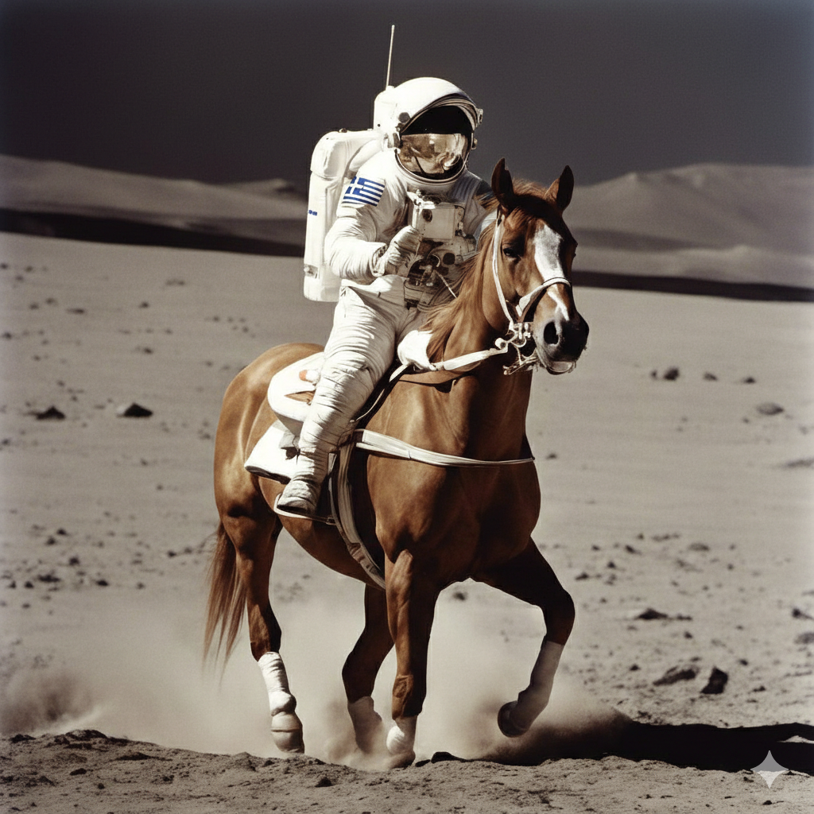

INF 426:
Generative AI

Image adapted from “Astronaut Riding a Horse (SDXL)”, public domain.
Instuctor:
Evangelos Kalogerakis (kalogerakis AT tuc DOT gr)
Meeting times:
Wednesdays + Thursdays 5-7pm ET
Location:
Thelma Mavridou Amphitheatre
Students can also join remotely - check moodle.tuc.gr for zoom link
Lecture Notes & Announcements & Other Information:
Check moodle.tuc.gr
Course Objectives
This course covers the principles and methods of generative artificial intelligence for synthesizing digital content across multiple modalities, including text, images, audio, and 3D/4D data. Topics include digital representations of content; probabilistic modeling and latent variable methods; supervised, unsupervised, and self-supervised learning; autoregressive generative models; variational autoencoders; generative adversarial networks; and diffusion-based generative models. The course further covers foundation models, including large language models and large-scale image generation models, as well as multimodal generative systems. Advanced topics include generative models for 3D content and motion, neural representations and neural rendering, controllable and conditional generation, evaluation of generative models, and ethical considerations of generative AI.
Course Prerequisites
Strongly recommended courses before taking this course:
Linear Algebra (Math 102)
Multivariable Calculus (Math 103)
Artificial Intelligence (INF 311)
Computer Graphics (INF 312)
Computer Vision (INF 417)
Class Plan
Lecture material will be available asynchronously. Coursework can be completed asynchronously. Students may attend lectures in person or watch them live via Zoom; attendance is optional. Zoom links, lecture notes, recorded videos, programming resources, and assignments will be posted on Moodle.
Week-by-week outline (tentative)
Week 1: Introduction; Digital Representations of Content: Text, Images, Audio, 3D & 4D
Week 2: Deep Learning Foundations / Supervised, Unsupervised, and Self-supervised Learning
Week 3: Autoregressive Generative Models
Week 4: Latent Variable Models & Variational Autoencoders (VAEs)
Week 5: Generative Adversarial Networks (GANs)
Week 6: Diffusion Models
Week 7: Foundation Models
Week 8: Conditioning, Control & Prompting
Week 9: Multimodal Generative Models
Week 10: Generative Models for 3D Content
Week 11: Neural Rendering
Week 12: Generative Models of Motion & 4D
Week 13: Evaluation of Generative Models, Deepfake Detection, and Ethics
Expectations/Requirements
- One midterm exam
- Programming assignments (PyTorch)
- Oral presentation of a recent state-of-the-art paper published within the previous two years (the list of candidate papers will be provided by the instructor).
- Term project (a mini-research project)
Grading Criteria
50% Midterm Exam (a midterm exam score above 50% is required to continue with the course)
10% Programming Assignments
10% Oral Presentation
30% Term Project
(No final exam)
Scores to grade conversions:
[97.5, 100] => 10.0
[92.5, 97.5) => 9.5
[87.5, 92.5) => 9.0
[82.5, 87.5) => 8.5
[77.5, 82.5) => 8.0
[72.5, 77.5) => 7.5
[67.5, 72.5) => 7.0
[62.5, 67.5) => 6.5
[57.5, 62.5) => 6.0
[52.5, 57.5) => 5.5
[50.0, 52.5) => 5.0
Note: A course grade below 5.0 is not a passing grade (i.e., score less than 50.0)
Accommodation Statement
I am committed to providing an equal educational opportunity for all students. Students with a documented physical, psychological, or learning disability may be eligible for reasonable academic accommodations to support their success in this course. If you have a documented disability requiring accommodation, please notify me within the first month of the semester so that appropriate arrangements can be made.
Academic Honesty Statement
The integrity of the academic enterprise requires honesty in scholarship and research. Academic honesty is expected of all students enrolled in this course. Academic dishonesty includes, but is not limited to, cheating, fabrication, plagiarism, and facilitating academic dishonesty. Appropriate sanctions may be imposed on any student found to have committed an act of academic dishonesty.
COVID/Other Airborne Diseases Policy
Students who are ill with COVID-19 or other airborne diseases must not attend class in person. Students are expected to attend remotely via Zoom until they are no longer contagious.
Equity and Inclusion Statement
I am committed to fostering a culture of diversity and inclusion in which everyone is treated with dignity and respect. This course is for all students, regardless of age, background, citizenship, disability, ethnicity, family status, gender, geographic origin, language, political views, race, religion, or work experience. We each bring different skills and perspectives to the course, and we will learn from and with one another.
In both in-person and online settings, all participants are expected to uphold and promote a welcoming learning environment. Politeness, kindness, and tolerance are expected at all times. Please respect that people may hold different opinions and may approach problems in different ways. Keep unstructured critique to a minimum and ensure that any criticism is constructive. Be mindful of your own biases and avoid micro-aggressions. Listen to others and allow everyone the opportunity to participate; reflect on whether you may be dominating a conversation and make space for others to contribute.
Disruptive behavior is not welcome, and insulting, demeaning, or harassing behavior of any kind is unacceptable. In particular, behavior that excludes or marginalizes individuals or groups is not tolerated. If you feel that you have been, or are being, harassed or made uncomfortable by someone in this class, please contact me.
back to Evangelos Kalogerakis' page